01Install and start
You need Node.js 20, FFmpeg and Docker (for the voice engine). Screen recording works on Linux with X11, macOS and Windows; on Linux, Wayland sessions can't be recorded, so log in with an X11 session.
1. Start the voice engine
# in the repository root
docker compose up -d # Kokoro on http://localhost:8880 (first run downloads ~500 MB)2. Start the app
cd editor
npm install
npm run devPrefer an installer? npm run dist builds a Linux AppImage, a macOS .dmg or a Windows portable .exe into editor/release/, with FFmpeg bundled.
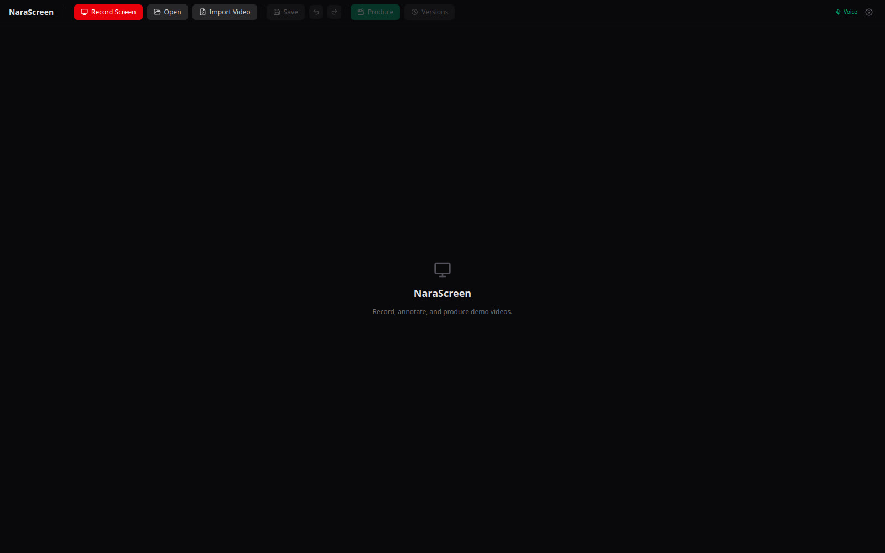
docker run command to start it.02Record your screen
- Click Record Screen. With more than one monitor, pick one under Pick a display.
- In Name your recording, type a Recording name (the default is a timestamp) and check Save in: sessions go to
~/NaraScreenunless you press Change…. - Click Start Recording (or press Enter) and do your demo.
- Click Stop & Edit when you're done. Discard throws the recording away.
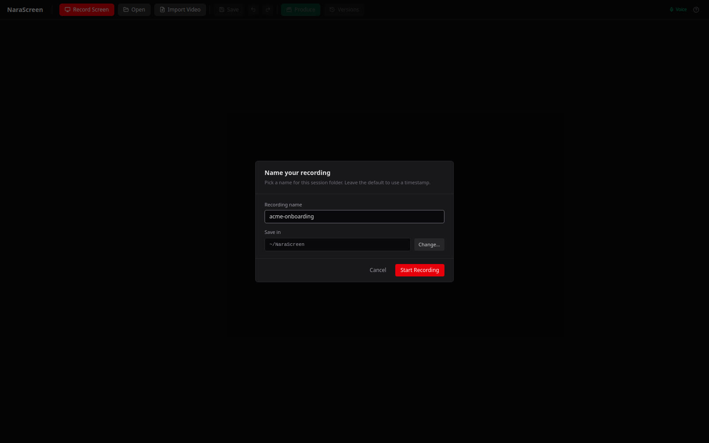
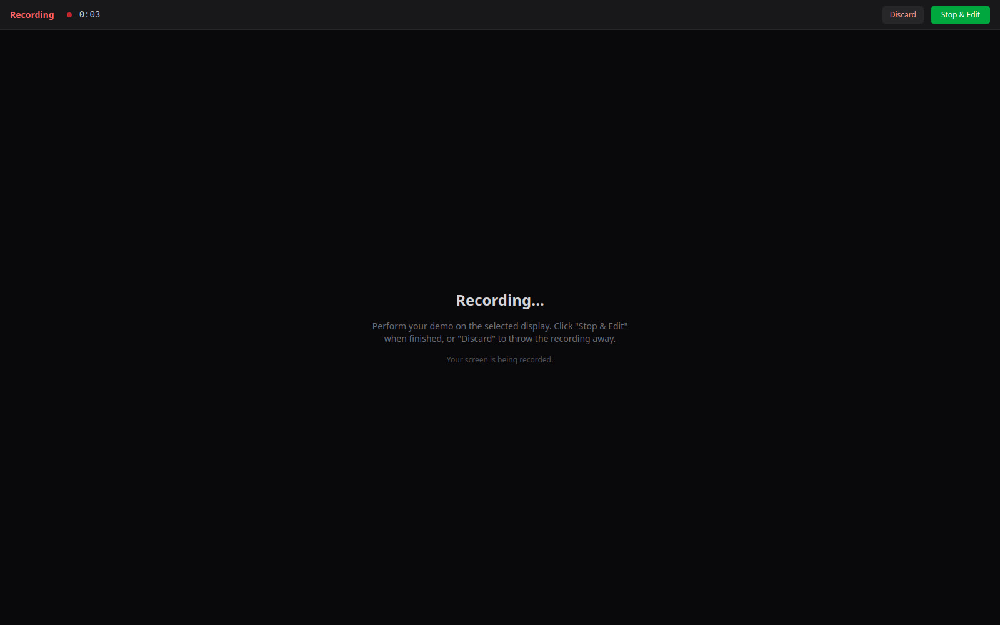
Already have a video? Use Import Video (mp4, mkv, webm, avi, mov). To continue earlier work, use Open and pick a session folder.
03Find your way around
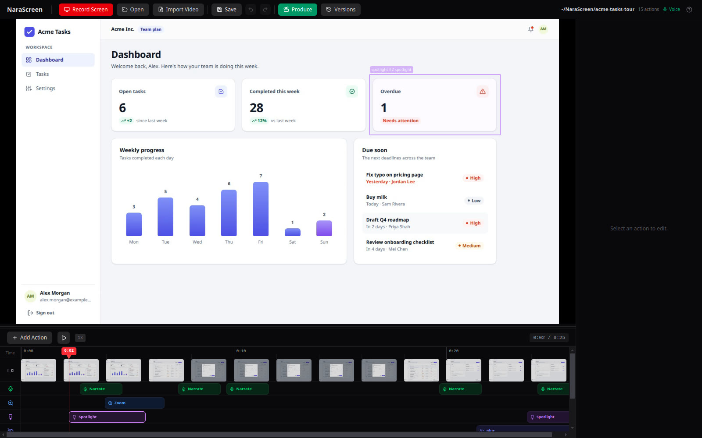
Timeline
A filmstrip of your recording, then one lane per effect type in use. Click to seek; drag a clip to move it; drag a clip's edge to change how long it lasts. Clips snap to the playhead and to each other (yellow guide).
Action panel
Select a clip to edit it here: its Name, its Timestamp (s), and the settings for that effect. Delete removes it.
Toolbar
Save turns amber (Save •) when there are unsaved changes; the app also autosaves 3 seconds after each change. Undo and redo keep 50 steps.
The timeline toolbar has + Add Action, play/pause, and a speed button that cycles 0.5×, 1×, 1.5× and 2×. The player itself shows region outlines only; zooms, blur and dimming appear when you produce.
04Add an action
Move the playhead to where the effect should start, then use one of three ways:
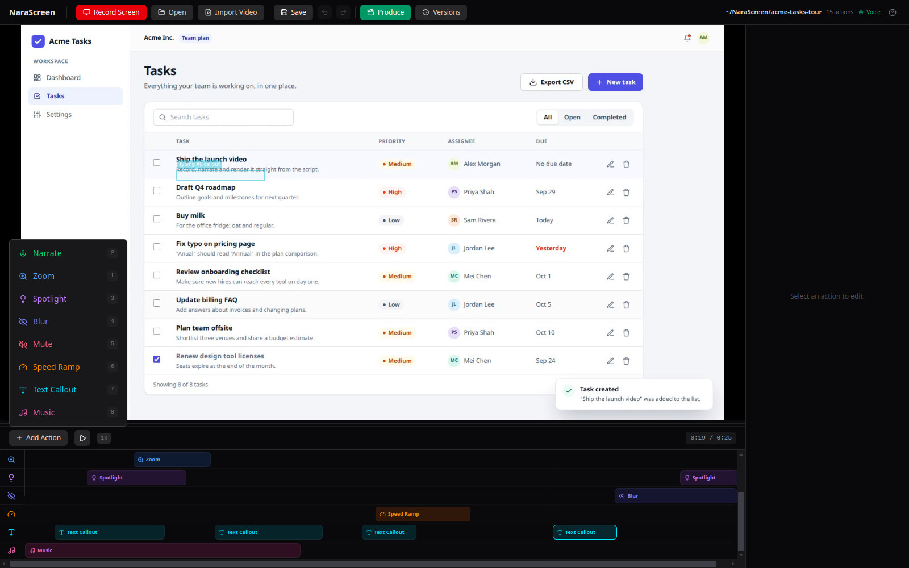
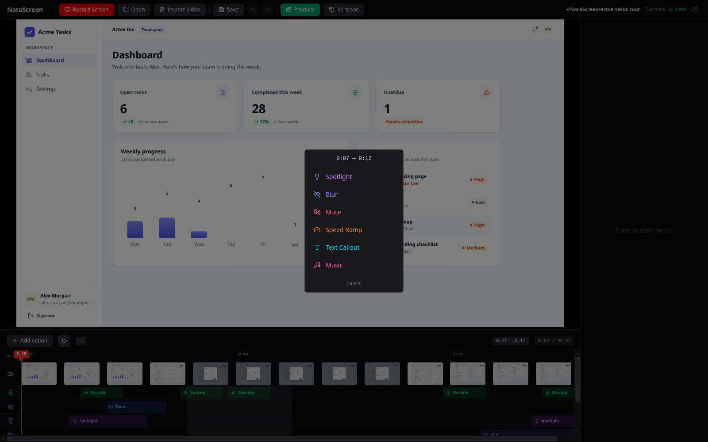
Or press a number key: 1 Zoom, 2 Narrate, 3 Spotlight, 4 Blur, 5 Mute, 6 Speed, 7 Callout, 8 Music, 9 Skip.
Handy while editing: D duplicates the selected action one second later, B splits a ranged action at the playhead.
05Draw regions on the video
Zoom, Spotlight, Blur and Text Callout work on a region of the screen. In their panel, click Draw … Region; the cursor becomes a crosshair, and you drag a box on the video.
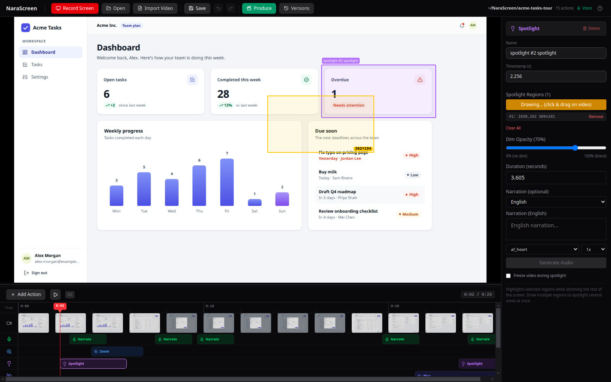
- Drawing stays on, so you can add several regions in a row (Add Another Region). Selecting another action ends it.
- Drag a region to move it; the selected one has handles to resize it. Alt+arrows nudge it by 1 px, Alt+Shift+arrows by 10 px.
- Esc cancels a drag in progress.
06Narration and voices
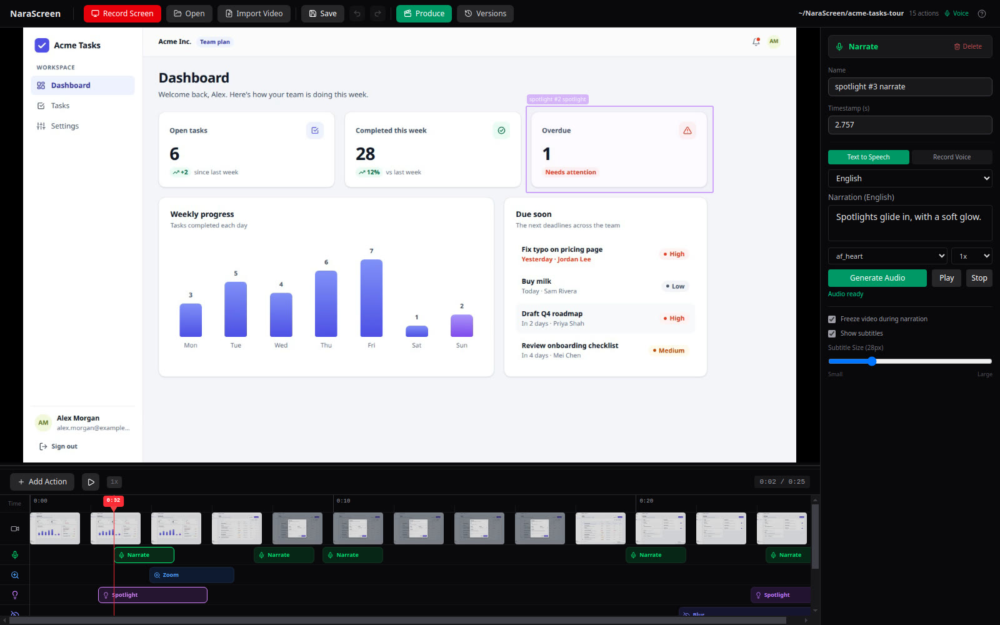
- Text to Speech or Record Voice: record your own voice with the microphone instead. A recording takes priority over generated speech.
- Language: English, British English, Hindi, Spanish, French, Japanese, Chinese, Brazilian Portuguese and Italian, with 54 voices between them. Add a language from the same dropdown.
- Speed (0.75× to 2×) applies to the whole project the next time you generate.
- Freeze video during narration: on, the frame holds while you talk; off, the video keeps playing under your voice.
- Show subtitles and Subtitle Size: subtitles are burned in with each word highlighted as it's spoken.
Zoom targets can carry their own narration too; the zoom holds for as long as you talk.
07Every effect, one by one
Spotlight
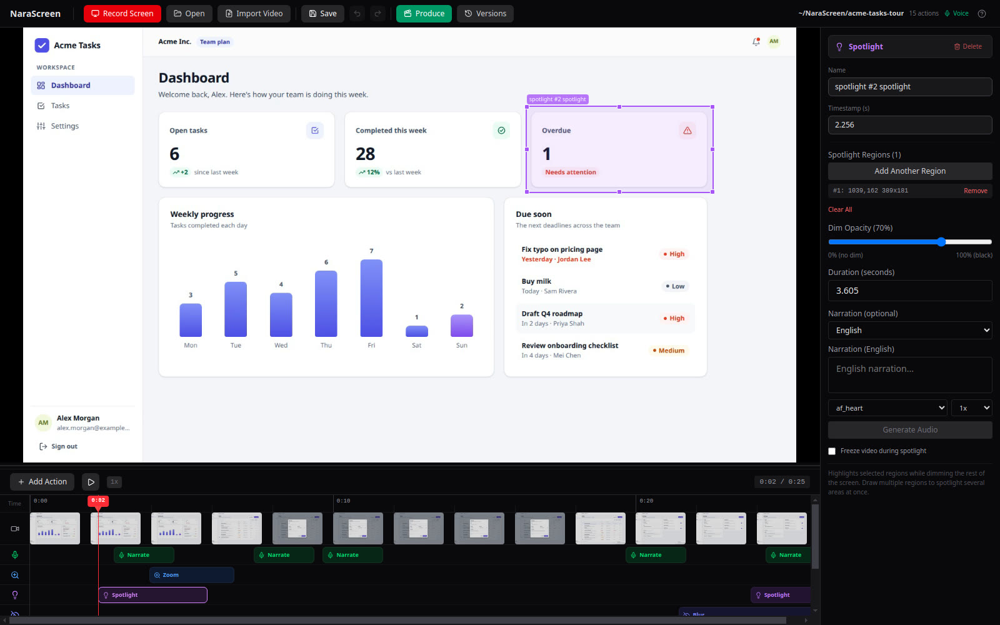
Dim Opacity sets how dark the rest gets (70% by default); Duration (seconds) sets how long it stays. Two spotlights can't overlap in time: draw another region on the same spotlight instead.
Zoom
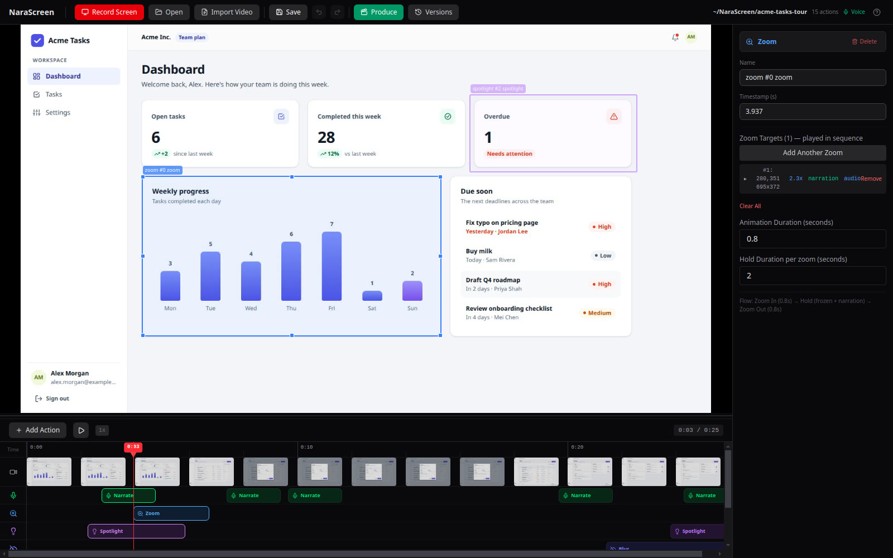
Animation Duration is the zoom-in/out time; Hold Duration per zoom is how long it stays (narration extends it). Click a target to give it its own narration.
Text Callout, including arrows
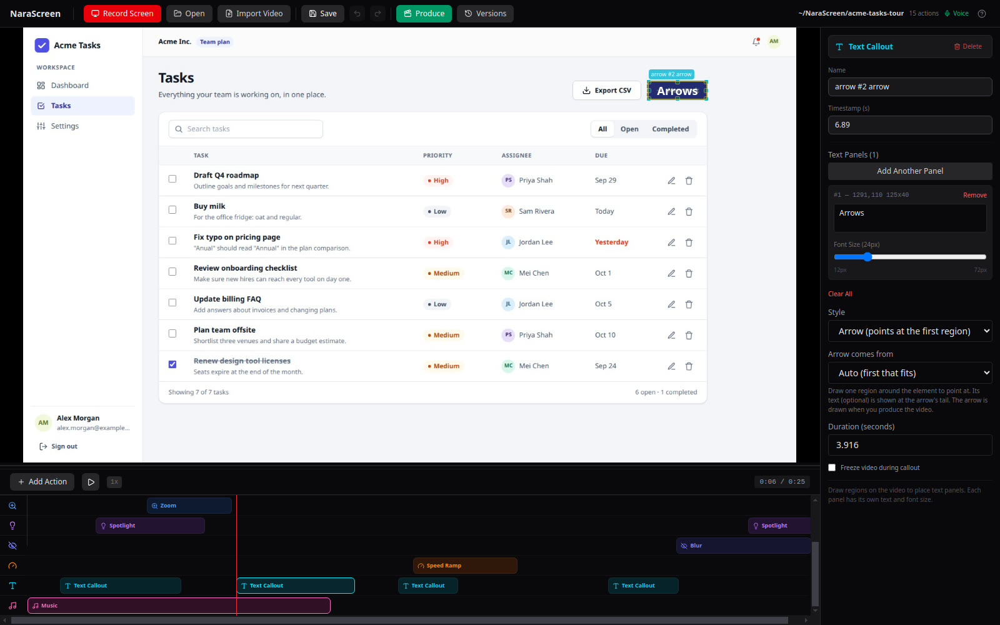
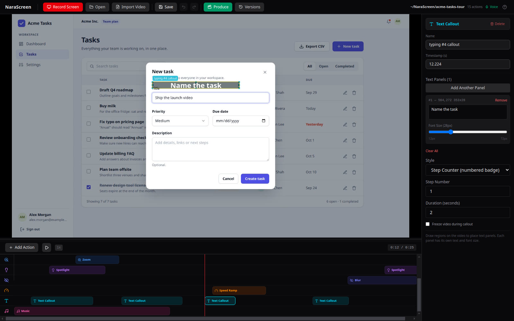
Pick the Style: Label (boxed text at the region), Step Counter, Lower Third (a banner along the bottom) or Arrow, with Arrow comes from to choose its direction. Each text panel has its own Font Size. Without a region, use Quick Text.
Blur
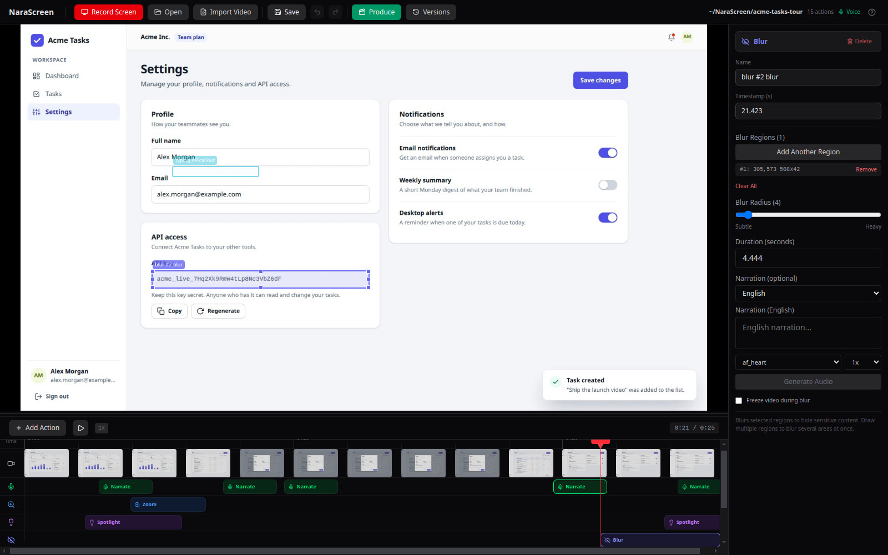
Blur Radius goes from Subtle to Heavy. A low radius still reads as "something was here", which is often what you want.
Speed Ramp, Skip / Cut, Mute
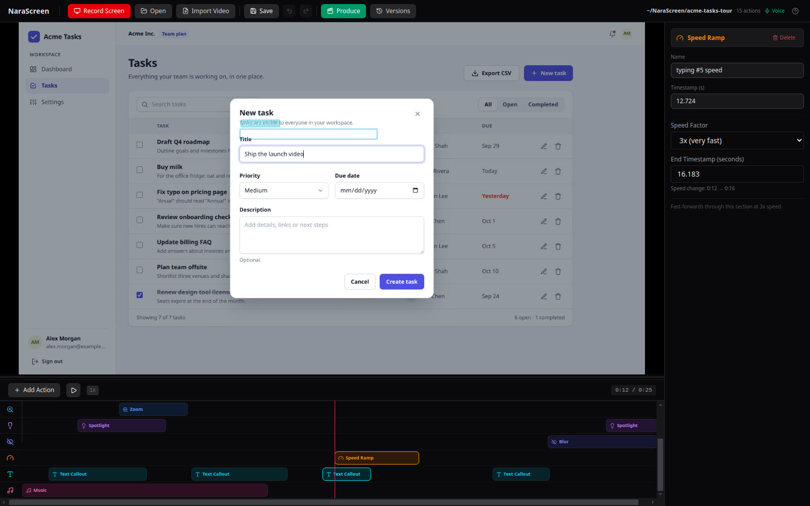
- Speed Ramp: a Speed Factor from 0.25× (slow motion) to 4×, until an End Timestamp.
- Skip / Cut: removes a stretch completely (key 9), e.g. a slow page load.
- Mute: silences the recording's own audio for a range (only matters for imported videos with sound).
Music
Select Audio File… (mp3, wav, ogg, m4a, aac), then set Volume and Duck to … during narration: the music drops automatically whenever someone is speaking. It loops under the whole video.
08Produce the video
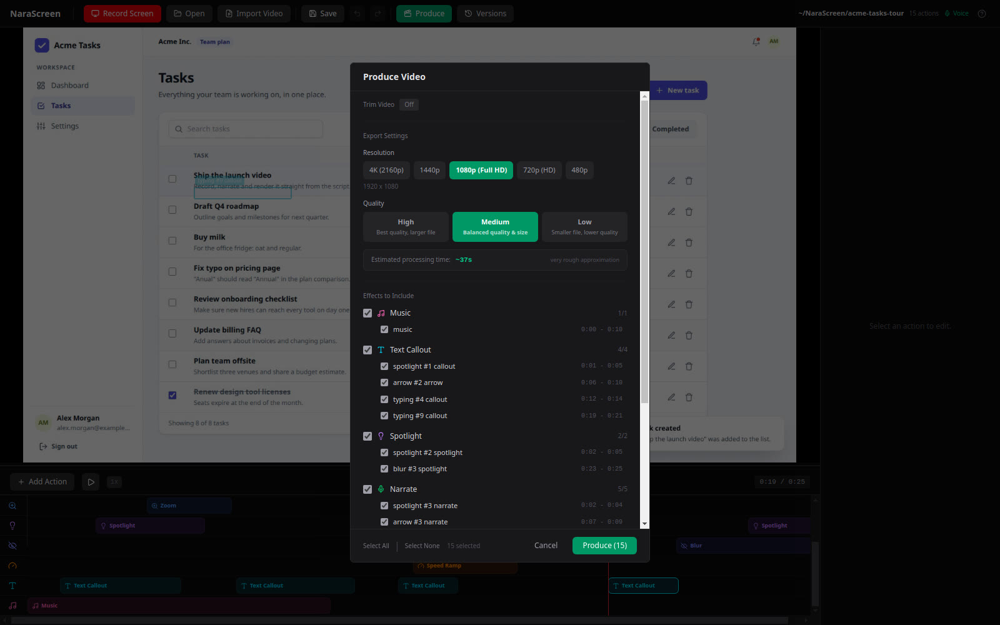
- Click Produce.
- Optional: turn on Trim Video and set In and Out.
- Pick a Resolution (480p to 4K; 1080p by default) and a Quality: High (best, larger file), Medium (balanced) or Low (smallest).
- Under Effects to Include, untick anything you want to leave out this time.
- Click Produce (N). A live log shows each pass; Cancel Production stops it.
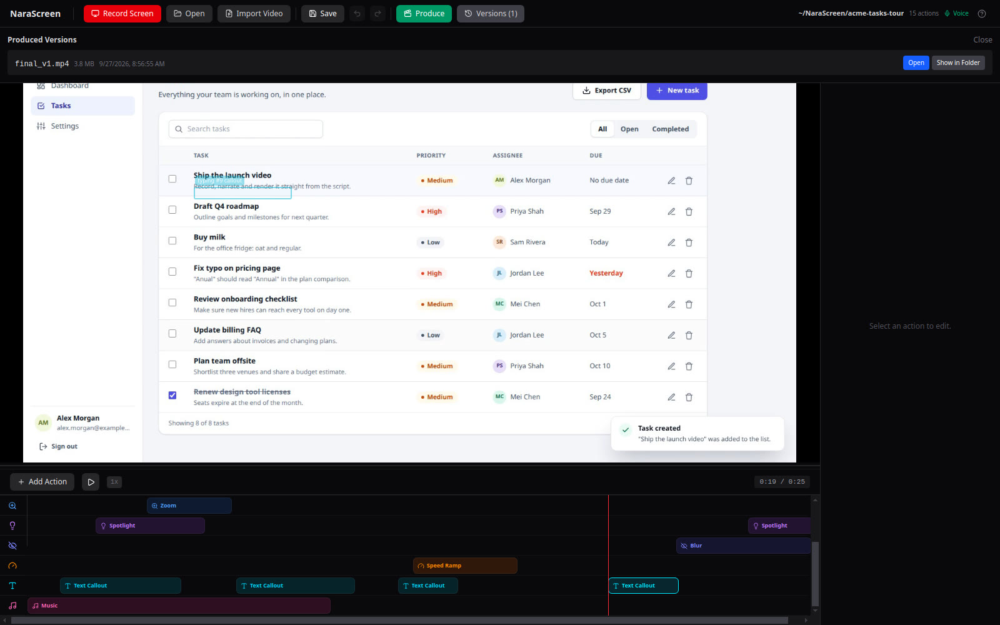
Each run saves a new file, final_v1.mp4, final_v2.mp4 and so on, so earlier versions are never overwritten.
09Keyboard shortcuts
| Keys | Does |
|---|---|
| Space | Play / pause |
| ← → | Seek 1 second (Shift: 5 seconds) |
| 1–9 | Add Zoom, Narrate, Spotlight, Blur, Mute, Speed, Callout, Music, Skip at the playhead |
| D | Duplicate the selected action (1 s later) |
| B | Split the selected ranged action at the playhead |
| Alt+arrows | Nudge the selected action's regions 1 px (Shift: 10 px) |
| Delete / Backspace | Delete the selected action |
| Ctrl+Z · Ctrl+Shift+Z | Undo · redo (Ctrl+Y also redoes) |
| Ctrl+S | Save |
| Esc | Cancel a drag or draw, close a dialog, deselect |
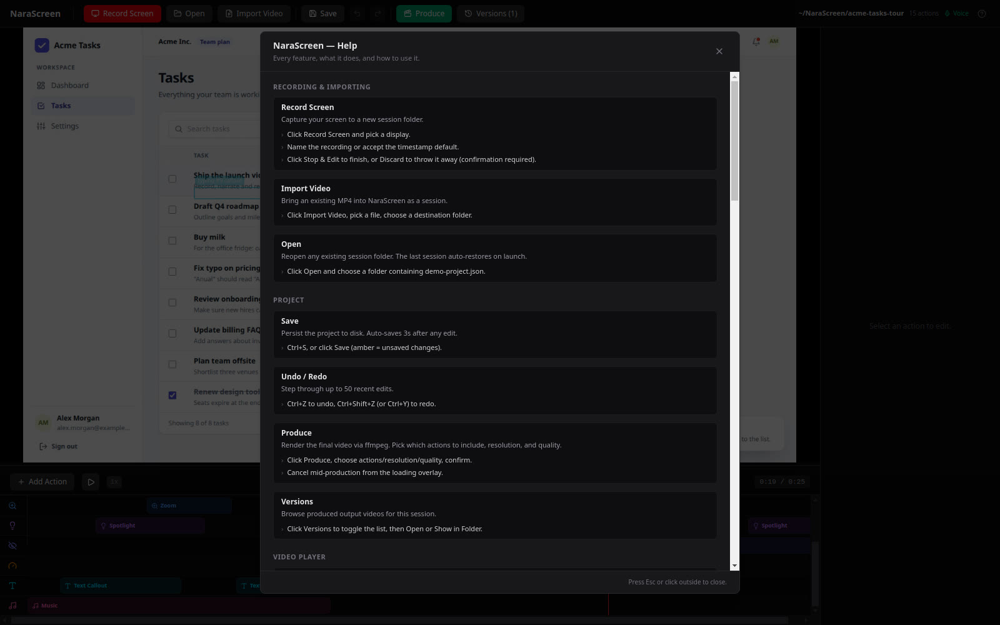
10Where your files live
Each recording is a plain folder you can copy, back up or share:
~/NaraScreen/my-demo/
├── demo-project.json # everything you placed on the timeline
├── recordings/recording.mp4 # the raw screen recording
├── thumbnails/ # the timeline filmstrip
├── audio/ # generated and recorded narration
└── video/final_v1.mp4 # what you produced11Going further
Some effects are richer when written as a script: soft-edged and animated spotlights, arrow colours and the pencil-loop highlight, title and end cards, and every language rendered in one run. A script can also drive the browser for you, so a re-take is one command. The folder that command produces is a normal desktop session, so you can open it here to fine-tune by hand.
The drawn mouse pointer, the follow camera, chapters, page transitions and the highlighter are script features; the desktop timeline doesn't offer them.